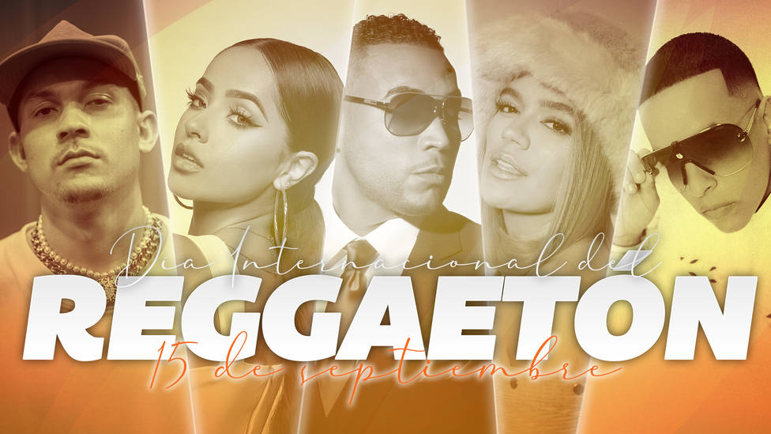

Es un género musical3 que derivó del reggae en español que es a su vez un subgénero del dancehall, así como elementos principalmente de la Música Bounce. Es un género musical muy popular hasta hoy en día; que ha llegado a alcanzar sus apogeos máximos durante las décadas de 2000 y 2010. Nació en Puerto Rico; surgió a raíz de la popularidad del reggae en español, junto con el hip hop durante los inicios de esa época. Posteriormente, el reguetón se apartó poco a poco del reggae, pero continuó usando los mismos instrumentos y ritmos musicales pero con diferentes letras y melodías. Esto se debió a que se usaban beats de reggae pero con letras y composiciones diferentes. Similar a la salsa la cual fue una expresión cultural de la juventud hispana de principios de los años 1970, el reguetón llegó a los Estados Unidos en los años 1990 y 2000 y se ha convertido en un modo de expresión para muchos jóvenes hispanos.
